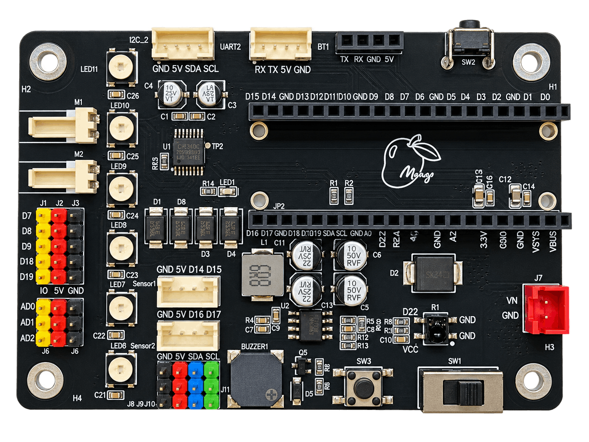

01
板載互動元件
整合 6 顆 WS2812B RGB LED、User Button、Buzzer 與 IR Receiver，可直接進行燈光、按鍵、聲音與紅外線互動。
 MangoBoxAI 精準教學平台
MangoBoxAI 精準教學平台
整合感測、控制與機器人應用的實體程式設計平台
電路板研發設計｜羅治民 教授
MangoLite 是為程式設計、感測控制與機器人應用設計的 Raspberry Pi Pico 系列擴充電路板。板上整合 6 顆可定址 RGB LED、User Button、蜂鳴器、紅外線接收、TI DRV8833C 雙馬達驅動，以及多組 Sensor、GPIO、ADC、I2C 與 UART 擴充介面，讓使用者不需先搭建大量基礎電路，即可從互動控制延伸到物聯網、智慧車與機器人實作。
MangoLite 將常用互動元件、感測與通訊介面、雙馬達驅動及 Pico 系列控制核心整合於同一塊載板，兼顧快速實作與後續擴充。

MangoLite 的設計重點是把常用輸入、輸出、馬達與擴充介面直接整合在板上，同時保留足夠的通用 GPIO 與多裝置擴充空間。
整合 6 顆 WS2812B RGB LED、User Button、Buzzer 與 IR Receiver，可直接進行燈光、按鍵、聲音與紅外線互動。
提供兩組雙訊號 Sensor Port、5 組 General GPIO 與 3 組 ADC，方便連接數位、類比與 PWM 類外部裝置。
板載 TI DRV8833C 雙 H-Bridge Motor Driver，可直接控制兩組 DC Motor，適合雙輪車與移動式機器人應用。
提供 UART0、UART1 與共享 I2C0 介面；搭配 Pico 2 W 時，還可進一步發展 Wi-Fi、Bluetooth 與物聯網應用。
以下描述 MangoLite 電路板本體的固定硬體與實體接頭。Servo、第二組 I2C 等用途若使用 General GPIO 實作，屬於軟體設定或應用選擇，不是 PCB 固定功能。
UART0：BT1，GP0 TX / GP1 RXUART1：Wired UART，GP4 TX / GP5 RXI2C0：GP20 SDA / GP21 SCL，可共享「一般 GPIO」表示電路板本身沒有將該 Pin 固定綁定到板載功能；實際使用仍需確認目前 Runtime、PWM、UART、I2C 或其他裝置是否已占用。
| GPIO | Pico 實體 Pin | MangoLite 主要用途 | 實體位置 / 類型 | 一般 GPIO | 主要限制與注意事項 |
|---|---|---|---|---|---|
| GP0 | 1 | BT1 UART0 TX | BT1 4Pin 接頭 | 條件式 | 外接 UART / Bluetooth 模組使用時作 UART0 TX。 |
| GP1 | 2 | BT1 UART0 RX | BT1 4Pin 接頭 | 條件式 | 外接 UART / Bluetooth 模組使用時作 UART0 RX。 |
| GP2 | 4 | 6× WS2812B RGB Data | 板載 RGB | 固定用途 | PCB 已連接 6 顆 WS2812B LED chain。 |
| GP3 | 5 | User Button | 板載 SW3 | 固定用途 | PCB 已連接使用者按鈕。 |
| GP4 | 6 | Wired UART1 TX | UART2 實體接頭 | 條件式 | 現行 MangoLite Host UART 使用 UART1 TX；UART2 是 PCB 接頭名稱。 |
| GP5 | 7 | Wired UART1 RX | UART2 實體接頭 | 條件式 | 現行 MangoLite Host UART 使用 UART1 RX。 |
| GP6 | 9 | Buzzer | 板載蜂鳴器 | 固定用途 | PCB 已連接蜂鳴器驅動電路。 |
| GP7 | 10 | General GPIO | IO / 5V / GND 擴充排 | 可以 | 可依需求配置 Digital I/O、PWM 或外部模組。 |
| GP8 | 11 | General GPIO | IO / 5V / GND 擴充排 | 可以 | 可用於 Servo 等 PWM 裝置，但 Servo 不是 PCB 固定用途。 |
| GP9 | 12 | General GPIO | IO / 5V / GND 擴充排 | 可以 | 可依需求配置 Digital I/O、PWM 或外部模組。 |
| GP10 | 14 | Motor B IN2 | 板載 Motor Driver | 固定用途 | PCB 已連接 TI DRV8833C。 |
| GP11 | 15 | Motor B IN1 | 板載 Motor Driver | 固定用途 | PCB 已連接 TI DRV8833C。 |
| GP12 | 16 | Motor A IN2 | 板載 Motor Driver | 固定用途 | PCB 已連接 TI DRV8833C。 |
| GP13 | 17 | Motor A IN1 | 板載 Motor Driver | 固定用途 | PCB 已連接 TI DRV8833C。 |
| GP14 | 19 | Sensor1 A | Sensor1 4Pin 接頭 | 條件式 | Sensor1 提供 GND / 5V / GP14 / GP15；實際裝置由應用決定。 |
| GP15 | 20 | Sensor1 B | Sensor1 4Pin 接頭 | 條件式 | 與 GP14 組成通用雙訊號 Sensor Port。 |
| GP16 | 21 | Sensor2 A | Sensor2 4Pin 接頭 | 條件式 | Sensor2 提供 GND / 5V / GP16 / GP17；實際裝置由應用決定。 |
| GP17 | 22 | Sensor2 B | Sensor2 4Pin 接頭 | 條件式 | 與 GP16 組成通用雙訊號 Sensor Port。 |
| GP18 | 24 | General GPIO / optional I2C1 SDA | IO / 5V / GND 擴充排 | 可以 | PCB 本質為 General GPIO；I2C1 SDA 是軟體可選 alternate role。 |
| GP19 | 25 | General GPIO / optional I2C1 SCL | IO / 5V / GND 擴充排 | 可以 | PCB 本質為 General GPIO；I2C1 SCL 是軟體可選 alternate role。 |
| GP20 | 26 | I2C0 SDA | I2C 多組接頭 | 共享匯流排 | 板上有 2.2kΩ / 3.3V pull-up；可共享但需避免 address 與總上拉負載衝突。 |
| GP21 | 27 | I2C0 SCL | I2C 多組接頭 | 共享匯流排 | 與 GP20 組成 I2C0 shared bus。 |
| GP22 | 29 | IR Receiver | 板載 IR | 固定用途 | PCB 已連接紅外線接收器。 |
| GP26 | 31 | ADC0 / GPIO | ADC 擴充 | 可以 | 可作 Analog Input 或一般 GPIO；訊號邏輯仍為 3.3V。 |
| GP27 | 32 | ADC1 / GPIO | ADC 擴充 | 可以 | 可作 Analog Input 或一般 GPIO；訊號邏輯仍為 3.3V。 |
| GP28 | 34 | ADC2 / GPIO | ADC 擴充 | 可以 | 可作 Analog Input 或一般 GPIO；訊號邏輯仍為 3.3V。 |
GP23、GP24、GP25 與 GP29 屬 Pico 模組內部資源，不是 MangoLite 的外部 breakout。尤其 GP25 不應被當成跨 Pico / Pico W / Pico 2 W 都一致的 MangoLite 板載 LED 定義。
MangoLite 的板載功能很多，但仍保留 General GPIO 與共享 Bus。低層 MicroPython、Runtime 或外部模組開發時，應把「PCB 固定功能」與「軟體可選用途」分開理解。
部分 MangoLite 接頭提供 5V 供電，但 Pico GPIO / ADC 訊號仍是 3.3V logic。不要將 5V signal 直接輸入 Pico GPIO。
Servo、PWM、第二組 I2C 等可依需求配置，但這些都是軟體角色。尤其 GP8 不是固定 Servo Port，GP18/GP19 也不是固定 I2C1。
GP20 / GP21 可供多個 I2C 裝置共用。板上已有 2.2kΩ pull-up 到 3.3V，外接模組時應注意 I2C address 與額外 pull-up 負載。
GP10～GP13 已接到 TI DRV8833C，應視為固定 Motor Driver input，不應重新分配為一般 GPIO。
BT1 使用 UART0（GP0/GP1）；Wired UART 使用 UART1（GP4/GP5）。兩者不是 MangoX2 那種共用同一 UART0 的關係，但仍應由 Runtime 管理各自的 peripheral ownership。
J7 提供外部 VIN / GND。公開板級規格以 最高 10V 為準；使用外部供電時仍需確認馬達、模組及整體電流需求。